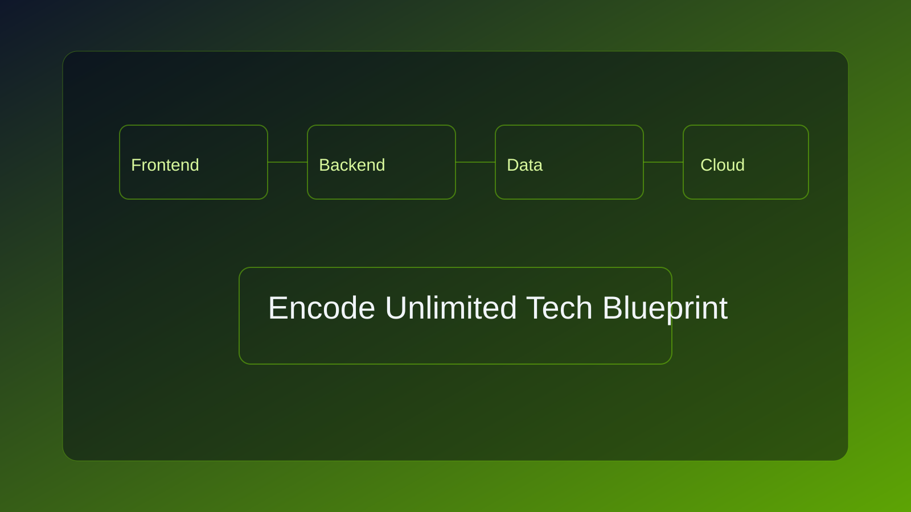
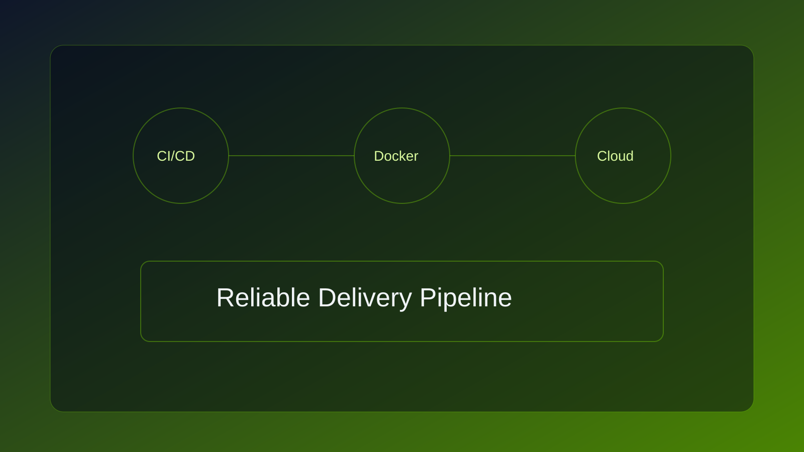

Delivery Toolchain
From local commits to production releases, our pipeline emphasizes speed and reliability.
- Automated CI checks and deployment gates
- Containerized workloads for consistent environments
- Monitoring, alerts, and rollback-ready releases
Production-ready stack choices selected for speed, scalability, and maintainability.

HTML / CSS
Semantic layout, responsive systems, modern utility-first UI.
JavaScript
Interactive frontend logic and modular architecture.
React / Vue
Scalable component-driven interfaces and dashboards.
Node.js
Event-driven APIs and service orchestration.
Laravel
Robust business logic, authentication, and admin flows.
PHP
Reliable backend systems for enterprise web products.
PostgreSQL
High-integrity relational modeling and analytics pipelines.
MySQL
High-performance transactional systems and SaaS storage.
Git
Branch strategy, code review, release flow discipline.
Docker
Consistent local-dev and deployment environments.
Cloud Hosting
Auto-scalable workloads with secure production operations.
From local commits to production releases, our pipeline emphasizes speed and reliability.

0%
Deployment Success Rate
0+
Production Integrations
0/7
Monitoring Coverage